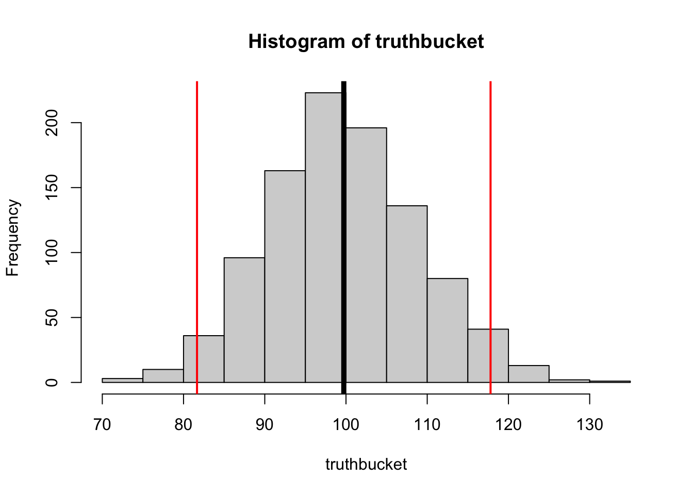
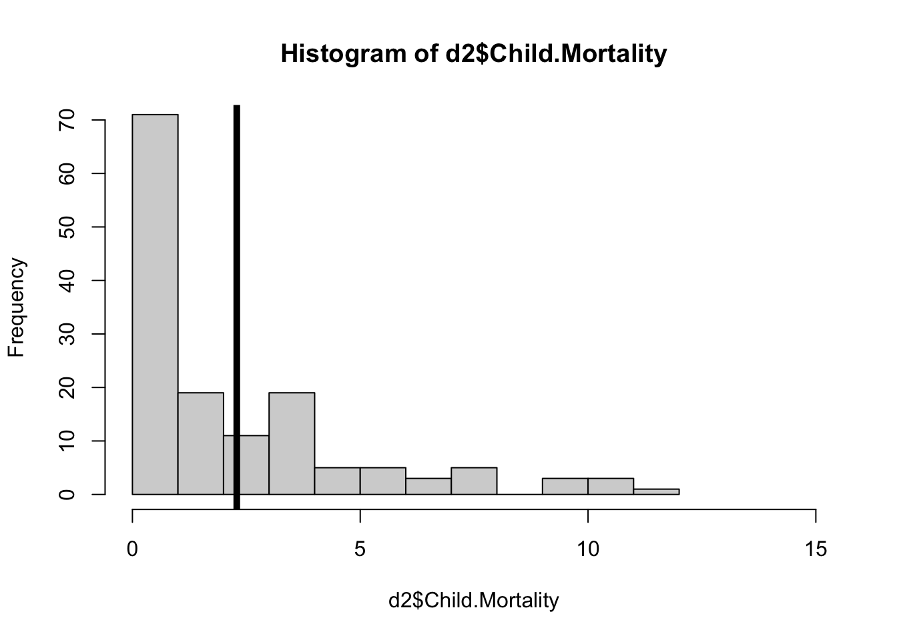
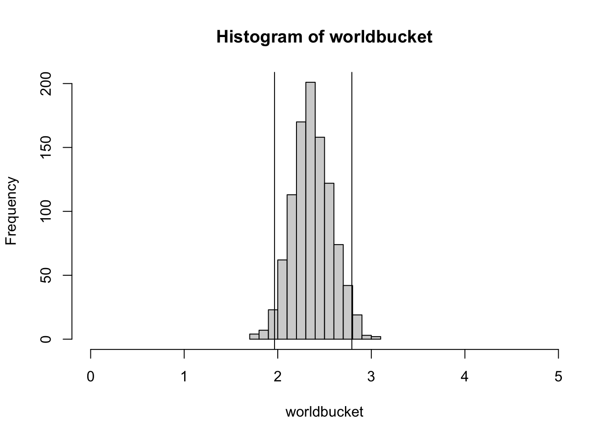

# rnorm(10000000, mean = 100, sd = 20)
fakey <- rnorm(10000000, mean = 100, sd = 30)
length(fakey)[1] 10000000head(fakey)[1] 86.70317 90.43451 69.90414 169.01348 106.15283 148.37963# rnorm(10000000, mean = 100, sd = 20)
fakey <- rnorm(10000000, mean = 100, sd = 30)
length(fakey)[1] 10000000head(fakey)[1] 86.70317 90.43451 69.90414 169.01348 106.15283 148.37963mean(fakey, na.rm = T)[1] 99.99941hist(fakey)
abline(v = mean(fakey), lwd = 5)
The sample function can be used to take a “perfectly random” sample from a set of data.
?sample # our friend, the sample function
sample(1:10, 1) # are you vibing with R?[1] 5sample(1:10000000, 1) # are you REALLY vibing?[1] 9952161sample(1:length(fakey), 1) # the numbers to sample from, another way. why better?[1] 5162104sample(1:length(fakey), 10) # a small sample [1] 1955283 5600643 8663810 1463045 1791839 1758346 8618610 1833785 7216589
[10] 4862176We can adapt this sample function to draw a random sample from fakey, using indexing.
fakey[3] # indexes person 3 from fakey[1] 69.90414fakey[sample(1:length(fakey), 10)] # ten random individuals from fakey. [1] 96.03798 105.05103 119.62873 124.95625 105.53498 66.60911 108.65039
[8] 101.81577 166.69020 73.52603Every time we run this code, we will generate a “new” random sample.
fakey[sample(1:length(fakey), 10)] [1] 78.46811 103.62564 55.48619 64.31286 118.41174 87.72043 118.97506
[8] 120.69116 90.49203 89.97816So if we want to “save” a random sample, we need to save it as an object.
lilfakey <- fakey[sample(1:length(fakey), 10)] # ten random individuals from fakey.
lilfakey [1] 149.81712 42.88971 103.52384 167.01017 88.38795 89.53976 133.20503
[8] 130.01262 66.29430 145.86018mean(lilfakey)[1] 111.6541hist(lilfakey)
abline(v = mean(lilfakey), lwd = 5)
We could run the lines below over and over and over again to illustrate sampling error…
lilfakey <- fakey[sample(1:length(fakey), 10)] # ten random individuals from fakey.
hist(lilfakey, xlim = c(0,200), ylim = c(0,10),
breaks = 5,
main = paste(c("mean=", round(mean(lilfakey), 4)), sep = ""))
abline(v = mean(lilfakey), lwd = 5)
“There’s got to be a better way.”
We can ask R kindly to do this repetition 1000 times for us.
truthbucket <- array()
for(i in c(1:1000)){
lilfakey <- fakey[sample(1:length(fakey), 10)] # ten random individuals from fakey.
truthbucket[i] <- mean(lilfakey)
}
length(truthbucket)[1] 1000hist(truthbucket)
mean(truthbucket)[1] 99.72862hist(truthbucket)
abline(v = mean(truthbucket), lwd = 5)
abline(v = mean(truthbucket) + 1.96 * sd(truthbucket), lwd = 2, col = 'red')
abline(v = mean(truthbucket) - 1.96 * sd(truthbucket), lwd = 2, col = 'red')
We’ll start with a sample of data
d <- read.csv("https://www.dropbox.com/scl/fi/l2vhaw1p4kkng7vozgv8f/DATASET_happy_data.csv?rlkey=wg1buadbuuv712ia55ju7lk0s&dl=1", stringsAsFactors = T)
head(d) Code Country SWLS_24 SWLS_23 Child.Mortality Population
1 AFG Afghanistan 1.364 1.721 5.5507865 41454762
2 AGO Angola 3.795 NA NA NA
3 ALB Albania 5.411 5.304 0.9370933 2811660
4 ARE United Arab Emirates 6.759 6.733 0.5028580 10642089
5 ARG Argentina 6.397 6.188 0.9648507 45538402
6 ARM Armenia 5.494 5.455 1.0044454 2943398
World.Region LifeExpectancy
1 Asia 66.035
2 <NA> NA
3 Europe 79.602
4 Asia 82.909
5 South America 77.395
6 Asia 75.683hist(d$Child.Mortality)
mean(d$Child.Mortality, na.rm = T)[1] 2.378706And we can use a for-loop to estimate sampling error
sample(1:nrow(d), nrow(d), replace = T) [1] 9 40 149 121 132 82 100 43 156 115 113 117 42 138 152 3 12 145
[19] 73 36 97 34 67 134 56 59 120 28 45 139 147 100 88 99 110 83
[37] 17 162 86 4 62 9 136 99 59 35 110 157 65 153 56 128 98 7
[55] 28 99 79 57 109 125 100 19 79 95 75 36 11 7 53 63 138 54
[73] 18 118 31 107 51 20 127 51 21 71 150 14 114 66 74 19 9 157
[91] 134 39 124 82 137 46 72 160 93 114 99 110 116 108 131 8 23 22
[109] 40 81 59 153 30 154 49 80 145 147 90 10 25 29 89 57 89 93
[127] 79 117 141 161 62 140 53 52 55 71 136 12 43 9 8 161 158 18
[145] 68 154 113 131 92 102 154 113 39 1 52 30 9 58 86 121 25 27d2 <- d[sample(1:nrow(d), nrow(d), replace = T),]
hist(d2$Child.Mortality, xlim = c(0,15), ylim = c(0,70))
abline(v = mean(d2$Child.Mortality, na.rm = T), lwd = 5)
mean(d2$Child.Mortality, na.rm = T)[1] 2.290532But the for-loop does this many times.
worldbucket <- array()
for(i in c(1:1000)){
d2 <- d[sample(1:nrow(d), nrow(d), replace = T),]
worldbucket[i] <- mean(d2$Child.Mortality, na.rm = T)
}And we can look at the results of this resampled distribution.
hist(worldbucket, xlim = c(0,5))
mean(d$Child.Mortality, na.rm = T)[1] 2.378706mean(worldbucket)[1] 2.36929sd(worldbucket) # SAMPLING ERROR.[1] 0.2108654upper <- mean(d$Child.Mortality, na.rm = T) + 1.96*sd(worldbucket) # SAMPLING ERROR.
lower <- mean(d$Child.Mortality, na.rm = T) - 1.96*sd(worldbucket) # SAMPLING ERROR.
hist(worldbucket, xlim = c(0,5))
abline(v = upper)
abline(v = lower)